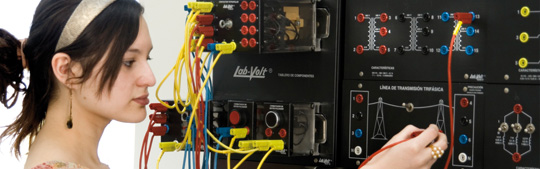

Requisitos de Ingreso
- Licencia de Educación Media.
- Certificado concentración de notas de Educación Media.
* No es requisito haber rendido la PSU
Modelo Educativo
El Modelo Educativo de Duoc UC está basado en la formación de Competencias que buscan desarrollar habilidades, destrezas y actitudes para enfrentar los procesos productivos desde las diferentes disciplinas en forma eficiente y eficaz.
Este propósito requiere una experiencia educativa que agregue valor laboral, social y cultural al alumno. Estos valores se reconocen en el Perfil de Egreso, que es el conjunto de competencias disciplinares y competencias de empleabilidad a través de las cuales se procura transmitir a los alumnos un sello reconocible en su comportamiento íntegro, confiable, competente y comprometido con los demás, el sello de Duoc UC.
Perfil de Egreso
El Técnico Superior en Instrumentación y Automatización Industrial, es un profesional que tendrá las competencias necesarias para la instalación, puesta en marcha, operación y mantenimiento de los sistemas electrónicos de instrumentación y control, de los variados procesos que se encuentran en la industria. De ellas, las competencias más relevantes se encuentran en el dominio de la representación gráfica de los procesos y sistemas de instrumentación; en las áreas de la electrotecnia, electrónica, sistemas neumáticos e hidráulicos, programación de PLC y sistemas automatizados.
Campo Ocupacional
El egresado de este programa de estudios está capacitado para desempeñarse en la industria, como profesional responsable, en el ámbito de sus competencias técnicas, de la operación, mantenimiento y de otros servicios requeridos por la maquinaria y el equipamiento con que opera la industria. Estas industrias pueden ser de muy variados tipos, como las de los sectores de las manufacturas, mineras, metalmecánicas, plásticas, papeleras, eléctricas, de la madera, etc. La amplitud de su campo laboral es muy grande, debido a que no existe una industria moderna en que toda su operación no esté coordinada por sistemas de control local y distribuido. Todas emplean extensamente instrumentación electrónica, sistemas computacionales, controladores lógicos programables (PLC), maquinaria movida por energía eléctrica y equipos cuyo funcionamiento hace uso de la neumática e hidráulica.